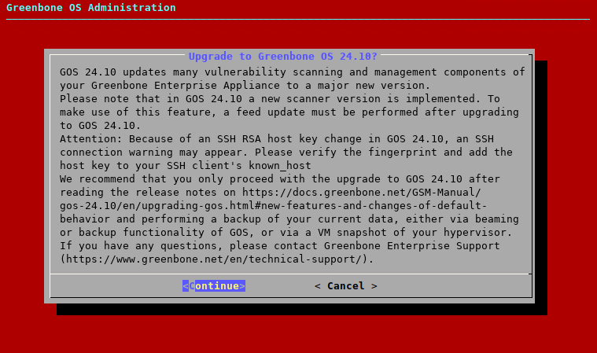
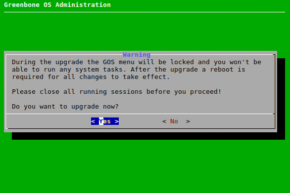
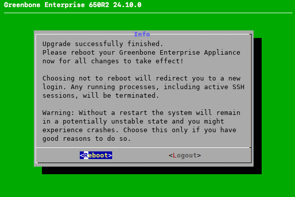

5 Обновление АК-ШУМКАР до последней основной версии¶
GOS 22.04 обеспечивает плавное обновление до новой основной версии GOS 24.10.
Все системные настройки и данные пользователя определяются и автоматически переносятся в новую версию, если только изменение поведения по умолчанию не влияет на конкретные настройки или данные. Список изменений поведения по умолчанию см. во главе 5.5.
5.1 Обновление системы освещения¶
Примечание
Перед обновлением до ГОС 24.10 необходимо скорректировать требования некоторых ГОС 22.04:
На устройстве должна быть установлена последняя версия GOS 22.04.
Владелец импорта фиды должен быть установлен, как следует. здесь.
Объекты данных должны быть установлены. Для этого необходимо обновить фид после настройки владельца-импортера фида.
гнм сетевой режим должен быть установлен, как указано здесь.
Необходимо проверить, есть ли б/у модель устройства с поддержкой GOS 24.10. Обратите внимание, что модели АК-ШУМКАР 400/450/600/650 R1, АК-ШУМКАР 5300/6400 и АК-ШУМКАР 150 не соответствуют ГСН 24.10.
Обновление до ГОС 24.10 можно выполнить следующим образом:
Выбирать Обслуживание и нажмите Входить.
Выбирать Обновление и нажмите Входить.
→ Сообщение информирует о том, что доступна новая версия ГСН.
Нажимать Входить чтобы закрыть сообщение.
Выбирать Переключатель выпуска и нажмите Входить.
→ Предупреждение информирует о том, что устройство обновлено до новой основной версии (см. Рис. 5.1).

Рис. 5.1 Предупреждение при обновлении до ГОС 24.10¶
Выбирать Продолжать и нажмите Входить.
→ Предупреждение информирует о том, что при обновлении до ГОС 24.10 устройство заблокировано (см. Рис. 5.2).
Примечание
Во время обновления нельзя выполнять никакие системные операции, и все текущие системные операции должны быть завершены до обновления.

Рис. 5.2 Предупреждение о том, что система заблокирована во время обновлений¶
Выбирать Да и нажмите Входить.
→ Сообщение информирует о том, что началось обновление.
Примечание
По завершении обновления появляется сообщение о том, что для применения всех изменений необходима перезагрузка (см. Рис. 5.3).

Рис. 5.3 Сообщение после получения обновления¶
Выбирать Перезагрузить и нажмите Входить.
→ После завершения перезагрузки наконец-то появились незавершенные этапы настройки. Если есть незавершенные шаги, то готовим сообщение с вопросом, следует ли их восстановить сейчас.
Примечание
Обновление канала необходимо выполнить после обновления до GOS 24.10, чтобы использовать новые функции (см. главу) 5.5).
Это первоначальное обновление канала с GOS 24.10 требует больше времени и требует больше ресурсов (ЦП, ОЗУ), чем обычно, из-за различных новых изменений и функций, которые настраиваются. Чтобы убедиться в доступности достаточного количества системных ресурсов, рекомендуется дождаться обновления канала, прежде чем возобновить нормальное использование устройства.


5.2 Обновление Flash-раздела до последней версии¶
Внутренний флэш-раздел устройства содержит резервную конфигурацию ГОС и используется в случае возврата к заводским настройкам.
изменить версию ГОС, хранящуюся на флэш-разделе (см. главу 6.3.8).
5.4 Перезагрузка веб-интерфейса после обновления¶
После обновления одной основной версии на другую необходимо изменить браузер, используемый для веб-кэш-интерфейса. Очистку кэша браузера можно выполнить в поставщике браузера.
Альтернативно, кэш-страницы каждой страницы веб-интерфейса могут быть жесткими, нажав кнопку Ctrl и F5.
Примечание
Очистка кэша страниц должна выполняться для каждой отдельной страницы.
Очистка кэша браузера является универсальной и применяется ко всем страницам.
5.5 Новые функции и изменения поведения по умолчанию¶
В следующем списке показаны основные дополнения и изменения поведения по умолчанию между GOS 22.04 и GOS 24.10.
В зависимости от последствий в настоящий момент эти изменения могут относиться к данному моменту изменения. Полный список изменений см. Страница «Дорожная карта и жизненный цикл».
5.5.1 Портфельные продукты¶
Модели приборов АК-ШУМКАР 400/450/600/650 R1, АК-ШУМКАР 5300/6400 и АК-ШУМКАР 150 R1 не соответствуют ГОС 24.10.
С ГСН 24.10.2 АК-ШУМКАР 150 Р1 заменен на АК-ШУМКАР 150 Р2.
5.5.2 Безопасная загрузка¶
GOS 24.10 поддерживает безопасную загрузку для виртуальных устройств.
В Huawei FusionCompute GOS 24.10 пока не поддерживается безопасная загрузка.
На устройствах, поставляемых с GOS 24.10, безопасная загрузка включена по умолчанию, за исключением устройств для Oracle VirtualBox.
На устройствах, которые были обновлены с GOS 22.04 до GOS 24.10, а также на новых устройствах для Oracle VirtualBox, безопасную загрузку необходимо активировать в поставщике гипервизора.
Чтобы включить безопасную загрузку для устройства, на котором она не включена по умолчанию, необходимо выполнить следующее:
По крайней мере, версия гипервизора, защищенная в подразделениях 4.1 необходимо использовать.
В соответствующем гипервизоре необходимо выполнить следующие настройки:
Гипервизор VMware vSphere (ESXi):
Семейство гостевых ОС должен быть установлен на Линукс.
Версия гостевой ОС должно быть установлено как минимум Debian GNU/Linux 11 (64-разрядная версия).
Рабочая станция VMware Pro:
Гостевая операционная система должен быть установлен на Линукс.
Версия гостевой системы освещения должно быть установлено как минимум Debian GNU/Linux 11 (64-разрядная версия).
Microsoft Hyper-V:
Виртуальная машина должна быть соответствует машине 2-го поколения.
Шаблон безопасной загрузки должен быть установлен на Центр сертификации Microsoft UEFI.
Oracle VirtualBox:
После первого включения безопасный Сбросить ключи по умолчанию необходимо нажать кнопку и продолжить следующий диалог.
Чтобы самостоятельно включить безопасную загрузку, обратитесь к технической документации используемого гипервизора.
5.5.3 Зашифрованный FTP Airgap¶
В GOS 24.10 появилась возможность шифрования Airgap FTP. Шифрование осуществляется через SFTP на основе SSH.
После добавления сервера для Airgap теперь можно использовать FTP или SFTP. Опции меню, предлагаемые в меню Airgap, зависят от этого выбора.
5.5.4 Параметры конфигурации SSHD¶
В GOS 24.10 алгоритмы и шифры, используемые демоном SSH, можно настроить через меню администрирования GOS. Доступны следующие настройки:
Шифры
Алгоритмы восстановления ключей хоста
Алгоритмы обмена ключами
MAC-алгоритмы
Алгоритмы открытия с ключом
5.5.5 Сетевой режим¶
Старый сетевой режим, который был заменен сетевым режимом гнм (Диспетчер сети GOS) из GOS 21.04 был удален. Обновление с GOS 22.04 до GOS 24.10 невозможно, если с GOS 22.04 все еще используется старый сетевой режим.
5.5.6 Пароль суперпользователя¶
В ГОС 24.10 изменен способ установки пароля суперпользователя. Оно также больше не восстанавливается при восстановлении административного образа или резервной копии, но остается неизменным по сравнению с первоначальным значением до импорта или восстановления.
Пароль суперпользователя можно изменить, как указано в главе 6.4.2.1.
5.5.7 Новые версии openssh и libssh¶
В GOS 24.10 включенные пакеты openssh и libssh модернизированы.
openssh: используется версия 9.2 в отличие от версии 8.4 в предыдущей версии ГСН. Это может соответствовать требованиям с традиционными сетями, использующими старые реализации SSH. Ложноположительные уязвимости с низким качеством обнаружения могут быть обнаружены при сканировании самого устройства.
libssh: используется версия 1.10 в отличие от версии 1.9 в предыдущей версии ГСН. Это может быть сделано с учетом совместимости с объектами, использующими старые реализации SSH.
5.5.8 Веб-интерфейс¶
5.5.8.1 Новый дизайн веб-интерфейса¶
В ГОС 24.10 представлен новый дизайн веб-интерфейса. Навигация основной панели была перенесена в вертикальное меню в левой части экрана, макет и цвет всех страниц и диалоговых окон были улучшены для повышения четкости и удобства использования. Кроме того, было добавлено несколько новых функций (см. ниже).
В GOS 24.10.2 в веб-интерфейсе добавлены модемные уведомления. При различных типах действий, таких как запуск, остановка или активация задач проверки или аудита, а также удаление, клонирование или экспорт любого объекта, в правом верхнем углу появляется сообщение.
5.5.8.2 Настраиваемые форматы отчетов¶
В ГОС 24.10 добавлена данная функция Отчет о конфигурации подготовить формы отчетов. Следующие формы отчетов можно составить:
Настраиваемые результаты CSV: настройка включенных столбцов и обработка формул.
Топология SVG: настройка типа графа и расстояния до узла.
Verinice ISM: настройка форматов прикрепленных текстов и отправляемых сообщений
Verinice ISM все результаты: настройка форматов прикрепленных статей и отправляемых сообщений.
Для применения форматов отчета можно выбрать настройку отчета об экспорте или использование оповещений, включающих отправитель отчета.
5.5.8.3 Поддержка ЭПСС¶
В версии GOS 24.10 к CVE и тестах на уязвимости предусмотрены оценки EPSS (система оценок эксплойтов). EPSS — это мера вероятности использования уязвимостей.
CVE и VT теперь присваиваются баллы и проценты. Оценочные показатели уязвимости области использования, наблюдаемые в течение следующих 30 дней, представляют собой число от 0 до 1. Чем выше значение, тем больше опасений того, что уязвимость действительно будет использована. Процент показывает долю уязвимостей, которые были оценены так же или ниже, чем уязвимость. Это помогает перенести счет в контекст.
5.5.8.4 Поддержка CVSS версии 4.0¶
В GOS 24.10 будет поддерживаться CVSS v4.0. Однако, поскольку CVSS v4.0 все еще находится на ранних этапах общеотраслевых данных, CVSS v4.0 пока доступен в ленте.
5.5.8.5 Отдельная страница для аудиторских отчетов¶
В ГОС 24.10 добавлена новая подстраница Тяжёлость меню веб-интерфейса: Отчеты о внешнем соответствии.
На этой странице представлены отчеты о проверках соответствия, эквивалентные Отчеты страница, содержащая отчеты по задачам проверки. В таблице на странице показаны общие показатели крепёжной системы, а также количество результатов для каждого уровня соответствия. Да, Нет и Неполный.
Подробное представление отчета также эквивалентно представлению задачи. Он обнаружил все результаты вместе с оценкой того, что требование было выполнено, не выполнено или выполнено лишь частично.
Фильтры и теги были настроены и не разделялись между отчетами об аудите и сканировании. Кроме того, были добавлены типы тегов для соответствия политике и аудита.
5.5.8.6 Учетные данные Kerberos¶
В GOS 24.10.2 добавлен новый тип учетных данных для аутентификации Kerberos в среде Microsoft Windows. Сканирование с аутентификацией через Kerberos по-прежнему будет выполняться с помощью протокола SMB.
Уже существующий СМБ учетные данные, используемые для аутентификации NT (Новая технология) LAN Manager (NTLM), переименованные в СМБ (NTLM) в веб-интерфейсе, чтобы избежать путаницы. Если аутентификация через Kerberos не удалась, в качестве резервного соединения будет использована аутентификация NTLM.
Чтобы иметь возможность пройти аутентификацию через Kerberos на объекте, устройство должно использовать DNS-сервер, способный выполнить обратный поиск объекта автоматически. В случае обнаружения результатов с использованием сенсорного устройства, сенсорное устройство также должно соответствовать этому устройству. На внешней стороне также требуется, чтобы система была частью функционирующего домена Microsoft Windows с работающим контроллером домена, инфраструктурой DNS и сетью.
5.5.9 Сканер Нотус заменен на ак-шумкарту¶
С ГОС 24.10 Нотус Сканер заменен на ак-шумкарту. Ак-шумкард, реализованный на языке программирования Rust, обеспечивает более безопасную и надежную работу. Это первый шаг к реализации всех функций сканера Ак-Шумкар в Rust в будущем.
Сама функция локальной проверки безопасности (LSC) теперь дает результат через /нотус конечная точка Ак-Шумкард.
В целях ускорения ЛСК сканер Ак-шумкар отправляет собранные пакеты на ак-шумкард.
Передача осуществляется через HTTP, прослушивание ак-шумкард постановления к локальному хосту.
5.5.10 Протокол управления Ак Шумкар (GMP)¶
Протокол управления «Ак Шумкар» (GMP) обновлен до версии 22.7, API немного скорректирован. Использование некоторых команд было изменено, а некоторые команды, элементы и атрибуты объявлены конфиденциальными. Полный справочник и список изменений доступны. здесь.
Если gvm-tools и/или python-gvm используются с GMP 22.7 и GOS 24.10, требуется следующая версия:
gvm-инструменты: 25.1.1 или выше
python-gvm: 26.0.0 или выше